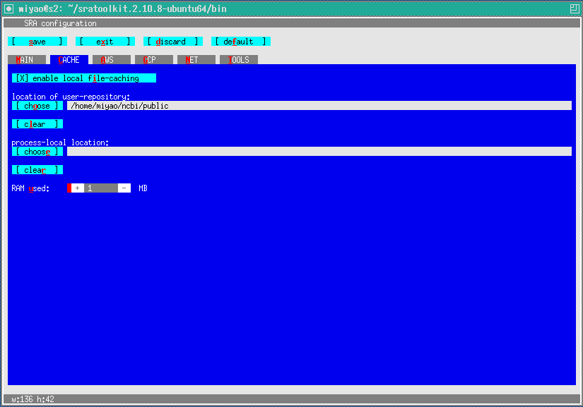

fastq-dumpの設定
[日本語トップページへのリンク]
fastq-dumpはNCBI（米国立バイオテクノロジー情報センター）で作成・公開されているソフトで、NCBIから次世代シーケンサーの配列データをダウンロードする場合に必要です。
[NCBIのソフトのダウンロードサイトのリンク]から、
Ubuntu Linux 64 bit architecture - non-sudo tar archiveをクリックしてダウンロードします。
tar xvfz sratoolkit.2.10.8-ubuntu64.tar.gz
としてファイルを展開します。
cd sratoolkit.2.10.8/bin
として、実行ファイルが展開されたディレクトリに移ります。
./vdb-config --interactive
と入力して、展開されたディレクトリにあるvdb-configを起動します。
画面は矢印キーではカーソルは動きません。赤で示されている一文字を入力すると対応するメニューが開いたり操作ができます。
MAIN画面は、Enable Remote Accessが選択した状態(デフォルト)にします。

cを入力して、キャッシュの画面に移ります。
local file-chachingとlocation of user-repositoryはデフォルトのまま。
uを入力して次に+を入力すると使用するRAMの値が増えていきます。
ここでは、1MB使用することにしました。

toolsはデフォルトのままでいいと思います。
current directoryにするとダウンロード時の中間ファイルがカレントディレクトリになります。
sを入力して、設定をセーブしてxを入力してvdb-configを抜ければ設定完了です。
sudo ln -s /home/miyao/sratoolkit.2.10.8-ubuntu64/bin/fastq-dump /usr/bin/fastq-dump
のようにtarで展開したfastq-dumpのフルパスを/usr/bin/fastq-dumpとしてリンクすれば完了です。